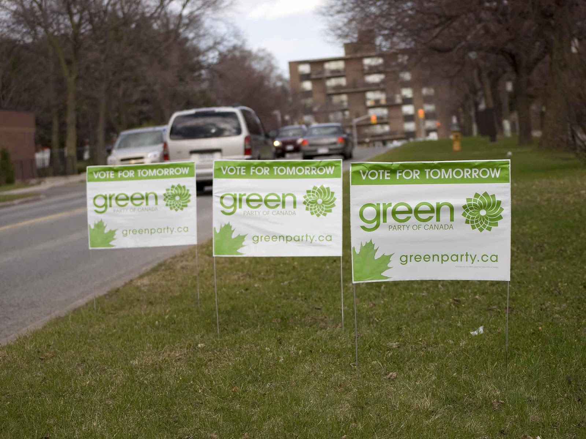

|
Social Movements
Social movements are born out of a quest for social justice. It is believed to be the most highly structured, rational, and enduring form of collective behaviour and its goal is either to promote or prevent social change. Collective behaviour is the spontaneous behaviour of people who are responding to similar stimuli. |
|
Types of Collective Behaviour |
||
|
Behaviour |
Distribution |
Example |
|
Rumour |
A widely circulating piece of information that is not verified as being true or false. |
The world will end in 2012. |
|
Urban legend |
A moralistic tale that focuses on current concerns and fears of the city or suburban dweller. |
Bigfoot, also known as a sasquatch, purportedly inhabits forests, mainly in the Pacific Northwest region of North America. |
|
Fad |
An unusual behaviour pattern that spreads rapidly and disappears quickly (although it may reappear). |
Break dancing, body piercing. |
|
Fashion |
A widely accepted behaviour pattern that changes periodically. |
Nike shoes, yoga pants as everyday clothing |
|
Crowd |
A temporary collection of people who share an immediate interest. |
New Year’s celebrants at Time Square in New York. |
|
Mob |
An emotional crowd ready to use violence for a specific purpose. |
Lynch mob. |
|
Riot |
An episode of largely random destruction and violence carried out by a crown. |
Destructive behaviour of Montreal fans in 2008, following the seven-game Stanley Cup victory over the Boston Bruins. |
|
Social movement |
Movement that has as its goals to promote or prevent social change. |
Civil rights movement. |
Source: Sheppard and Greene, 2008
Social Movements
|
Primary Types of Social Movements Various social movements have their own unique characteristics. American anthropologist David Aberle (1918-2004) offered basic four types of social movements:
Primary Types of Social Movements
|
Value-Added Theory of Social Movements
Developed by American sociologist Neil Smelser (1930-2017), this theory identifies six conditions that must be satisfied, each of which is necessary but insufficient without the others for social movement to occur:
|
The Six Conditions for Social Movement |
|
|
Structural conduciveness |
The environment must be social-movement friendly. Social movements arise as people come to think their society has some serious problems. |
|
Structural strains |
A second condition promoting the emergence of a social movement is the presence of conflicts, ambiguities, and discrepancies within a society. People begin to experience relative deprivation when society fails to meet their expectations. |
|
Generalized belief |
A general recognition that there is a problem and agreement that something should be done to fix it. |
|
Precipitating factors |
One or more significant events must occur to galvanize people into action. |
|
Mobilization of participants for actions |
Once the first four conditions exist, widespread concern about a public issue sets the stage for collective action in the form of rallies, distributing leaflets, and building alliances with sympathetic organizations. |
|
Social control |
Actions of the media, police, courts, community leaders, and government officials can lead to the success or failure of a social movement. If the right kind of force is applied, a potential social movement may be prevented, even though the first five determinants are present (Macionis and Gerber, 1999; Sheppard and Greene, 2008). |
|
Resource Mobilization Theory of Social Movement This theory focuses on the process through which members of a social movement secure and use the resources needed to advance their cause. A social movement cannot succeed without substantial resources, including money, workforce, leadership, logistics, access to mass media, and a positive public image. Outsiders are as important as insiders to the victory of a social movement for the supply of resources. Social Justice Movements
Several social movements aim to combat the inequalities and injustices of the world. They may focus on wide ranging issues such as the economy, technology, politics, laws, culture and so on. Let us examine examples of past and present social movements in Canada. The Women’s Movement/Feminist Movement
In Canada, this movement has undergone three waves:
|
|
The Environmental Movement This movement began in Canada in the 1900s with the creation of nature preserves and natural parks, which to this day are being enjoyed by its citizens. Early environmentalists in Canada often protested against the construction of dams and chemical spraying of forests. These initiatives however, were not known until much later. A significant date that characterizes this movement is October 22, 1967 when the Canadian Broadcasting Corporation aired the documentary Air of Death which revealed disturbing imagery about the effects of pollution on human health.  In the 1980s, collaborative organizations sprung up such as the Canadian Peace Alliance, the Canadian Environmental Network, and a political party, the Green party. Today, the environmental movement is more active and tackles issues like climate change, meeting greenhouse gas reductions, among others. The Labour Movement This movement promotes the improvement of workers’ everyday lives through fighting for their rights including minimum wages, overtime pay, workplace safety standards, maternity and paternity leave, vacation pay, protection from discrimination and harrasment. This movement is rooted in the era of the Industrial Revolution that changed the lives of working Canadians during the mid-nineteenth century.
This was the time when people began to work in large factories with dangerous settings and poor compensation. The workers welcomed the intervention of labour organizations that promise to help bring about improvements in working conditions of those who had the least amount of influence including women, children, and immigrants. |